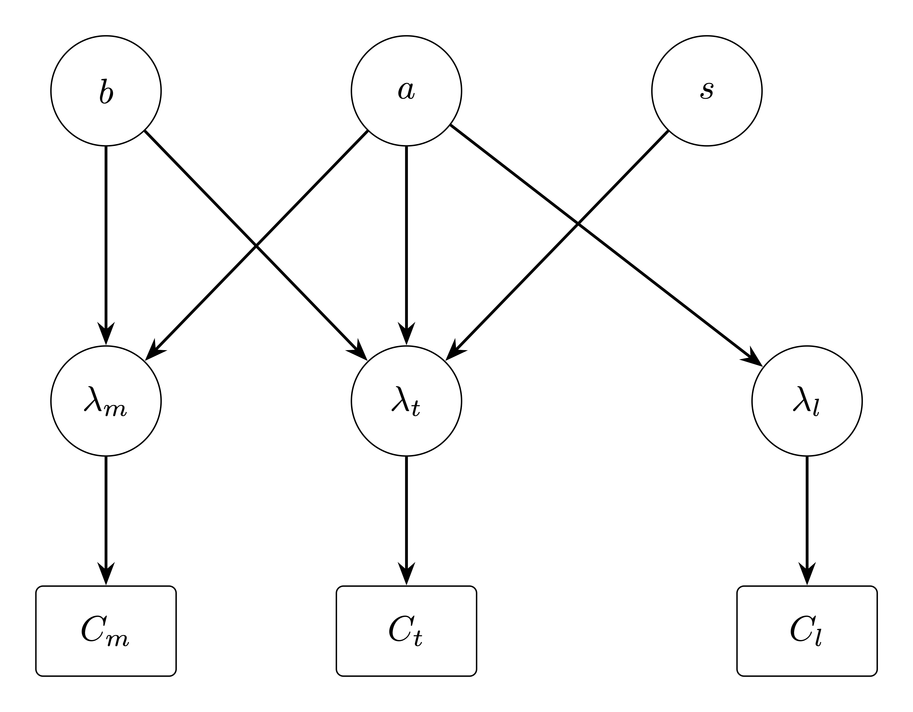
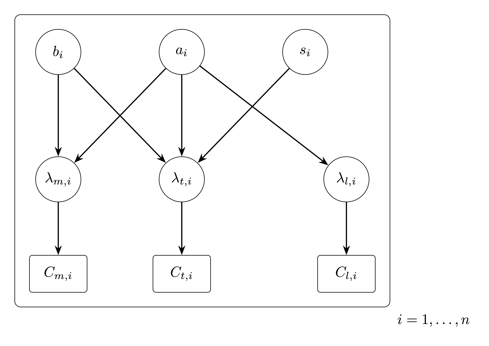
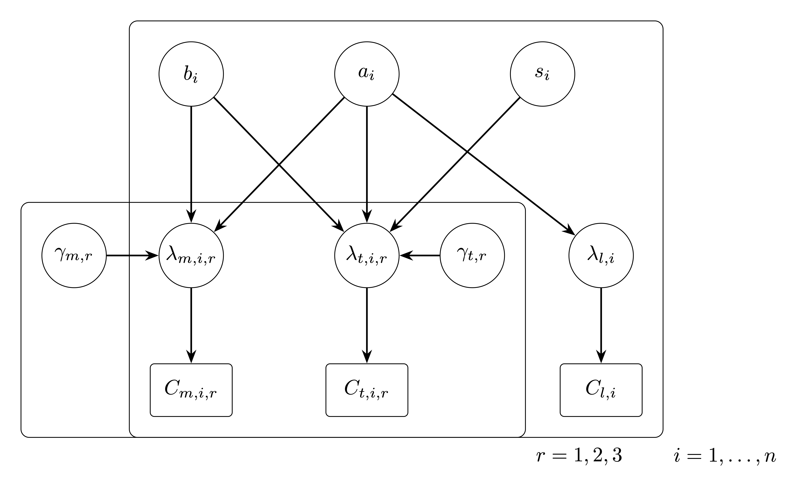
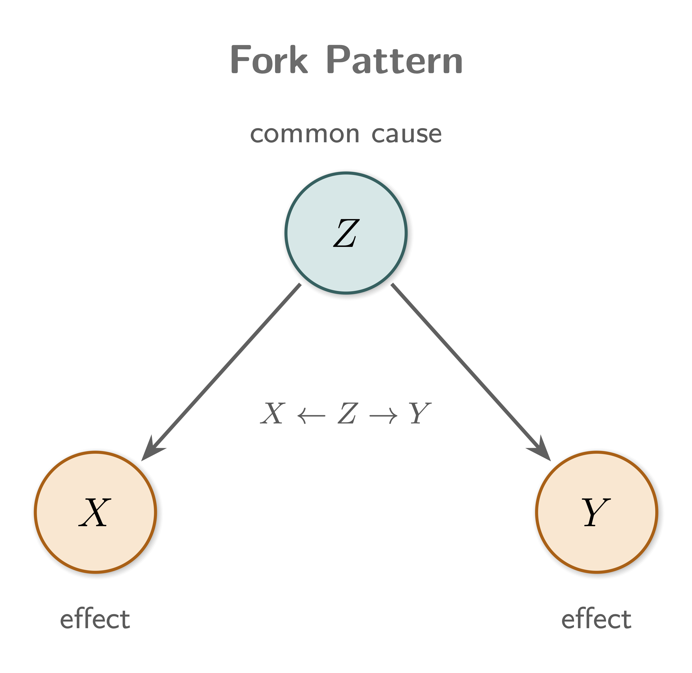

This blog builds on the statistical foundations established in Part 1 by specifying and fitting a probabilistic model for DNA-encoded library (DEL) sequencing counts. The goal is to explain noisy observed counts in terms of latent enrichment, background matrix effects, input-library composition, and replicate-level technical variation, so that binding-related signal can be separated from technical and compositional artifacts. A compound-aware model that incorporates molecular structure is deferred to Part 3.
The causal sketch from Part 1
The causal sketch introduced in Part 1 is the starting point for the model building in Part 2. Its role is to tell us which sources of variation should be represented explicitly, rather than being left for the model to absorb in an ad hoc way.
Figure 1: Causal sketch of DEL sequencing counts.
In Part 1, the sketch identified four main causes of observed DEL counts:
Library composition,
Matrix background,
Target-specific binding,
Replicate-level technical noise.
In Part 2, each of these becomes a concrete part of the probabilistic model:
Input abundance explains baseline counts,
Matrix effects explain non-specific background,
Target-specific terms capture enrichment beyond background, and
Replicate terms account for technical variation across experiments.
This is the key modeling idea for the rest of the post: observed counts are treated as noisy consequences of several overlapping latent processes, not as direct measurements of binding. We follow a Bayesian workflow inspired by McElreath’s Statistical Rethinking to build and evaluate candidate models that respect the causal structure of the sketch while differing in their statistical assumptions.
A Bayesian workflow for modelling DEL counts
A central point made by McElreath in Statistical Rethinking is that a DAG does not uniquely determine a statistical model. It encodes causal assumptions and conditional independencies, thereby constraining which variables may be connected, which adjustment sets are valid, and which conditional independencies must hold. However, it does not specify the likelihood, link function, or prior structure. As a result, a single DAG defines a family of compatible statistical models, which must be evaluated based on both predictive performance and their ability to faithfully represent the underlying data-generating process.
With that in mind, we model DEL counts in the following order:
State the causal assumptions (DAG first).
Clarify which variables influence counts (e.g., library composition, matrix effects, target effects, replicate variation) and identify potential confounding and collider structures. The DAG fixes the causal scaffolding that every candidate model must respect and determines which variables must (or must not) be conditioned on for valid inference.
Enumerate candidate generative models compatible with the DAG.
From the same DAG, write down several plausible statistical models that differ in, for example:
likelihood family (e.g., Poisson-Gamma/Negative Binomial vs. Poisson-Lognormal),
link function and parameterization of the rate,
hierarchical structure (pooling across replicates, matrices, or compounds),
inclusion of interaction or nonlinear terms,
mixture components for latent subpopulations.
Each candidate is a concrete realization of the same causal assumptions, but may differ substantially in its statistical and predictive behavior.
Specify likelihoods and priors for each candidate.
For every candidate model, write the full generative specification: likelihood, priors, and deterministic relationships (including background, enrichment, and replicate terms) before fitting any parameters. This step makes explicit all modeling assumptions implied but not fixed by the DAG.
Run prior predictive simulation for each candidate.
Simulate synthetic counts from the priors of each candidate to check whether its assumptions are plausible. We use this to:
verify prior scales are reasonable,
detect impossible predictions,
understand implied behavior before seeing data,
discard candidates whose prior predictive distributions are incompatible with known properties of DEL data.
Fit each surviving candidate to data.
Estimate the posterior for each model (e.g., using variational inference for scalability on large DEL datasets, or MCMC where feasible).
Inspect posterior inferences.
Summarize posterior distributions, credible intervals, and parameter dependencies to understand uncertainty, identifiability, and trade-offs between latent components within each candidate.
Perform posterior predictive checks.
Generate replicated datasets from each fitted model and compare them with observed data. Key diagnostics include:
missing structure such as multimodality or heterogeneity (suggesting missing latent structure).
Compare candidate models by predictive performance.
Because the DAG admits multiple statistical models, model comparison is intrinsic to the workflow rather than an afterthought. Use WAIC, LOO cross-validation, and stacking when useful, alongside the posterior predictive checks from step 7. Notice that strong predictive performance does not guarantee correct causal interpretation.
Revise and expand the model family if needed.
If no candidate passes predictive checks, propose new candidates, still constrained by the DAG, by modifying:
likelihood family,
hierarchical structure,
predictors or interactions,
nonlinear transformations,
mixture components.
If domain knowledge suggests that the DAG itself is incomplete or incorrect, revise the DAG and return to step 2.
Interpret and decide.
Use the posterior of the chosen model (or a stacked combination of candidates) to interpret parameters, generate predictions via posterior predictive distributions, and evaluate causal contrasts or counterfactuals where the causal assumptions encoded in the DAG justify such interpretations.
State the causal assumptions (DAG first)
The first step in the Bayesian workflow is to make the causal assumptions explicit as a directed acyclic graph (DAG). In our DAG, an observation is represented as a square node, a latent variable (unobserved) as a circle, and causal relationships are represented as directed edges between nodes. We build the DAG incrementally, starting from what is actually measured and then introducing the latent quantities needed to explain it.
For a single compound, the experiment yields three observed counts:
Matrix counts, \(C_m\),
Target counts, \(C_t\),
Library counts (pre-selection), \(C_l\).
These are shown as the only nodes in the initial DAG:
Figure 2: DAG showing observed counts for one compound.
Each observed count is assumed to arise from a stochastic process governed by an underlying rate:
\(\lambda_m\), for matrix counts,
\(\lambda_t\), for target counts,
\(\lambda_l\), for library counts,
as shown in the DAG below:
Figure 3: DAG showing observed counts and their underlying rates.
The exact form of this process (the likelihood or exact parameterization) and how the rates relate to one another are left unspecified for now.
Why are latent rates in the DAG but not in the causal sketch?
The causal sketch is meant to stay at a high level: it shows the latent causes we care about and the observed counts we measure. In reality, however, the counts \(C_m\), \(C_t\), and \(C_l\) are not direct outputs of those causes. They are noisy observations affected by sampling, PCR amplification, sequencing depth, and other technical variation.
The latent rates \(\lambda_m\), \(\lambda_t\), and \(\lambda_l\) are the bridge between these two levels: they represent the expected count intensity implied by the latent causes, before observation noise is added. Including them makes the statistical model more faithful, because it lets us separate the signal-generating process from the noise-generating process.
They are not emphasized in the causal sketch because doing so would add another layer of detail and make the diagram harder to read, without changing its main causal message. The sketch is therefore a simplified summary of the main latent causes and observed outcomes, whereas the full probabilistic model should include the latent rates explicitly.
The rate parameters \(\lambda_m\), \(\lambda_t\), and \(\lambda_l\) are not independent; they are influenced by several latent factors that we introduce as new nodes in the DAG. These include:
Compound abundance in the input library, \(a\),
Matrix background propensity, \(b\),
Target-binding propensity, \(s\),

Figure 4: DAG showing observed counts, rates, and latent factors.
The arrows in the DAG encode which latent factors influence which rates:
Compound abundance, \(a\) enters all three rates (\(\lambda_l\), \(\lambda_m\), \(\lambda_t\)). More copies of a compound in the input library mean more molecules available to be sequenced in every downstream condition, so \(a\) sets a baseline for all observed counts.
Matrix background, \(b\) enters \(\lambda_m\) and \(\lambda_t\) but not \(\lambda_l\). It captures non-specific retention (e.g., sticking to beads, resin, or other surfaces) that occurs whenever the library is exposed to the experimental matrix, regardless of whether the target is present. The library counts \(C_l\) are measured before the matrix is introduced, so they are not influenced by \(b\).
Target-binding propensity, \(s\) enters only \(\lambda_t\). It represents the additional enrichment a compound experiences specifically because it binds the target, and is the quantity we ultimately want to infer.
So far the DAG captures the main sources of variation in observed counts for one comopound only. However, DEL experiments involve large numbers of compounds. To model this, we introduce a plate that replicates the structure for each compound \(i\):

Figure 5: DAG showing observed counts, rates, and latent factors for multiple compounds.
Here, the plate indicates that each compound \(i\) has its own set of observed counts (\(C_{m,i}\), \(C_{t,i}\), \(C_{l,i}\)), rates (\(\lambda_{m,i}\), \(\lambda_{t,i}\), \(\lambda_{l,i}\)), and latent factors (\(a_i\), \(b_i\), \(s_i\)). The causal structure within the plate is the same for every compound, but the parameters can vary across compounds.
Another source of variation is technical noise at the replicate level: differences in sequencing depth, library preparation efficiency, and other batch effects mean that repeated measurements of the same compound are not identical. We extend the DAG with a second plate, indexed by replicate. This plate contains replicate-specific parameters \(\gamma_{m,r}\) and \(\gamma_{t,r}\) acting on the matrix and target rates, respectively. The compound plate and the replicate plate overlap on the observed counts, so each \(C_{m,i,r}\) and \(C_{t,i,r}\) is influenced by both its compound-level latent factors (\(a_i\), \(b_i\), \(s_i\)) and its replicate-level effects (\(\gamma_{m,r}\), \(\gamma_{t,r}\)).

Figure 6: DAG showing observed counts, rates, latent factors, and replicate effects.
A DAG does not guarantee valid inference. It only specifies the assumed causal structure and conditional independencies. Inference can still fail if we condition on variables that distort the causal pathways implied by the graph. Therefore, the next step in the workflow is to analyze the DAG to determine which variables should and should not be conditioned on when making inferences about the target-binding propensity \(s\).
What does valid inference mean in the context of a DAG?
Valid inference means that the statistical model allows us to recover the latent target-binding propensity \(s\) from the observed counts in a way that is consistent with the causal assumptions encoded in the DAG. In practice, this means accounting properly for other causes of the target counts, such as:
Input abundance \(a\),
Matrix background \(b\),
Replicate-level variation \(\gamma_m\) and \(\gamma_t\),
and avoiding conditioning choices that introduce bias, such as conditioning on colliders or leaving backdoor paths open.
Invalid inference occurs when the model attributes variation to \(s_i\) that is actually due to other pathways, or, when \(s_i\) is not identifiable from the observed data under the assumed model.
A DAG helps you reason about bias from conditioning, but valid inference also depends on model identification and likelihood specification. So even with the right DAG, inference can still be invalid if the statistical model is misspecified or the latent parameters are not identifiable.
Which variables should and should not be conditioned on?
Our goal is to infer the target-binding propensity \(s\). To do this, we need to understand how information about \(s\) flows through the DAG. This is where the concepts of path, open and closed paths, four elemental confounds (as described by McElreath - second edition of statistical rethinking, Figure 6.6) come in.
What is a path in a DAG?
A path is a sequence of edges connecting two nodes, regardless of the direction of the arrows. Every consecutive pair of nodes in the sequence must be joined by an edge in the DAG. For example, in our DAG, one path connecting \(s\) to \(C_{t}\) is:
\(s\) → \(\lambda_t\) → \(C_{t}\)
Figure 7: Path from \(s\) to \(C_t\).
There are also paths from \(s\) to other nodes in the graph, for example:
A path is open when information can pass along it, meaning the two variables may become statistically associated.
A path is closed when something blocks that route, so the variables are independent along that path.
Whether a path is open or closed depends on two things:
The arrow pattern along the path, and
Which variables we condition on.
Opening and closing paths matter because conditioning can change the associations implied by a DAG. Closing an unwanted path, such as a confounding path, can reduce bias. But conditioning can also do harm: it may block part of the causal effect we want to estimate, or open a previously closed path and create a spurious association.
McElreath shows that these changes in path status are governed by a small set of recurring path structures. In practice, DAG reasoning means identifying which structure appears along a path and then asking whether conditioning on a node blocks bias or introduces it.
This is why simply removing correlated predictors is not a causal solution. As McElreath puts it, “Pairwise correlations are not the problem.” What matters is why variables are correlated and what conditioning on them does. A high correlation may arise because two variables share a common cause, because one mediates the effect of the other, or because both are downstream of some selection process. These situations require different modelling choices.
What are the recurring path structures and how they can open or close a path?
There are mainly four elemental path structures that determine how conditioning affects the flow of information in a DAG.
The first is the fork, or confounding, structure:

Figure 10: Fork structure.
In a fork structure, the middle node is a common cause of the two endpoints:
\[
X \leftarrow Z \rightarrow Y
\]
Because both \(X\) and \(Y\) are caused by \(Z\), they may be statistically associated even if there is no direct causal effect between them. Conditioning on the common cause \(Z\) blocks this path and removes the association induced by \(Z\). This can be written as:
\[
X \perp\!\!\!\perp Y \mid Z
\]
which reads as “\(X\) is independent of \(Y\) once we know \(Z\)”.
Conditioning on \(Z\) blocks the backdoor path through the confounder, \(Z\), and helps recover an unbiased estimate of the causal effect.
What is a backdoor path?
A backdoor path is a non-causal path between \(X\) and \(Y\) that sneaks in through a common cause and can make \(X\) look associated with \(Y\) even when the association is partly or entirely confounded.
A front-door causal path is: \[
X \rightarrow Y
\]
This is the direct causal effect we want to estimate: the effect of \(X\) on \(Y\).
Backdoor path start by going backwards out of\(X\) into one of its causes (in this case, \(Z\)), then forward to \(Y\):
\[
X \leftarrow Z \rightarrow Y
\]
Recall that a path is a sequence of edges connecting two nodes, regardless of the direction of the arrows. So the path from \(X\) to \(Y\) can go backwards from \(X\) to \(Z\), and then forward from \(Z\) to \(Y\). This is a backdoor path because it goes “backwards” out of \(X\) before going forward to \(Y\).
A backdoor path carries confounding. To estimate the causal effect of \(X\) on \(Y\), we usually want to block backdoor paths by conditioning on appropriate common causes such as \(Z\).
Intuitive example of a fork structure and backdoor path
Suppose we want to estimate whether carrying an umbrella has an effect on being wet. However, there is a confounder: weather conditions. Rainy weather affects both whether someone carries an umbrella and whether they gets wet.
On rainy days, people are more likely to carry an umbrella and more likely to get wet. This can create a statistical association between umbrellas and getting wet, even if carrying an umbrella does not directly cause someone to get wet.
\[
X = \text{Carrying an umbrella}
\]\[
Y = \text{Getting wet}
\]\[
Z = \text{Weather conditions (rainy or not)}
\]
Weather is a common cause of both carrying an umbrella and getting wet. This creates the backdoor path:
\[
X \leftarrow Z \rightarrow Y
\]
or \[\text{Carrying an umbrella} \leftarrow \text{Weather conditions} \rightarrow \text{Getting wet}\]
So the association between umbrella use and getting wet is partly coming through the backdoor path via weather.
The path is called a backdoor path because instead of going forward from umbrella to getting wet: \[\text{Carrying an umbrella} \rightarrow \text{Getting wet}\]
It goes backwards from umbrella to one of its causes (weather):
\[\text{Carrying an umbrella} \leftarrow \text{Weather conditions}\]
and then forward from weather to getting wet: \[\text{Weather conditions} \rightarrow \text{Getting wet}\]
If we condition on weather, we compare people under the same weather conditions. This makes the causal question clearer. Weather creates a backdoor path because it affects both whether someone carries an umbrella and whether they get wet:
\[
\text{Carrying an umbrella} \leftarrow \text{Weather} \rightarrow \text{Getting wet}
\]
Conditioning on weather blocks this backdoor path. It separates the association caused by shared weather conditions from the possible direct effect of carrying an umbrella on getting wet. Once we compare people under the same weather conditions, we would expect umbrella use to be associated with a lower chance of getting wet, if umbrellas are effective.
Code for the fork example
Let’s simulate some data to illustrate the fork example. We will create a simple dataset where weather conditions affect both umbrella use and getting wet.
Figure 11: Fork example DAG.
Code
import numpy as npimport pandas as pdimport matplotlib.pyplot as plt# Set random seed for reproducibilitynp.random.seed(42)# Simulate weather conditions (0 = not rainy, 1 = rainy)weather = np.random.binomial(1, 0.3, size=1000)# Simulate umbrella use based on weather (more likely to carry an umbrella if it's rainy)umbrella = np.random.binomial(1, 0.8* weather +0.1, size=1000)# Simulate getting wet based on weather and umbrella use# People are more likely to get wet if it's rainy, but carrying an umbrella reduces the chancegetting_wet = np.random.binomial(1, 0.7* weather * (1- umbrella) +0.1* weather * umbrella +0.05* (1- weather), size=1000)# Create a DataFramedata = pd.DataFrame({'Weather': weather,'Umbrella': umbrella,'GettingWet': getting_wet})# Show the first few rows of the datasetfrom IPython.display import displaydisplay(data.head())
Weather
Umbrella
GettingWet
0
0
0
0
1
1
1
0
2
1
1
1
3
0
0
0
4
0
0
0
This code simulates a dataset of 1000 observations with three variables: Weather, Umbrella, and GettingWet.
Weather
Weather is simulated as a binary variable where 1 indicates rainy weather and 0 indicates not rainy. The probability of it being rainy is set to 0.3, meaning that 30% of the time it will be rainy.
Umbrella
The probability of carrying an umbrella is influenced by the weather and is defined as: \[ 0.8 * weather + 0.1 \]
This means that:
If it’s rainy (weather = 1), the probability of carrying an umbrella is 90%: \[ 0.8 * 1 + 0.1 = 0.9 \]
If it’s not rainy (weather = 0), the probability of carrying an umbrella is 10%: \[ 0.8 * 0 + 0.1 = 0.1 \]
Getting Wet
The probability of getting wet is defined as: \[ 0.7 * weather * (1 - umbrella) + 0.1 * weather * umbrella + 0.05 * (1 - weather) \]
This means that:
If it’s rainy and the person is not carrying an umbrella (weather = 1, umbrella = 0), the probability of getting wet is 70%: \[ 0.7 * 1 * (1 - 0) + 0.1 * 1 * 0 + 0.05 * (1 - 1) = 0.7 \]
If it’s rainy and the person is carrying an umbrella (weather = 1, umbrella = 1), the probability of getting wet is 10%: \[ 0.7 * 1 * (1 - 1) + 0.1 * 1 * 1 + 0.05 * (1 - 1) = 0.1 \]
If it’s not rainy (weather = 0), the probability of getting wet is always low at 5%, regardless of umbrella use. \[ 0.7 * 0 * (1 - umbrella) + 0.1 * 0 * umbrella + 0.05 * (1 - 0) = 0.05 \]
Summary of the simulated data
Let’s plot the simulated data to see the associations between the variables.
Starting with the raw association between Umbrella and GettingWet:
We are interested in the association between carrying an umbrella and getting wet, and how this association changes when we condition on weather.
Figure 12: Association between carrying an umbrella and getting wet.
To quantify how the umbrella–wet association changes when we account for weather, we fit two logistic regression models: one unadjusted (umbrella only) and one adjusted (umbrella and weather).
Both models treat each person’s outcome as a Bernoulli draw with an individual probability \(p_i\):
The adjusted model additionally conditions on weather, blocking the backdoor path \(\text{Umbrella} \leftarrow \text{Weather} \rightarrow \text{GettingWet}\):
The priors are weakly informative Normal(0, 2) distributions on each coefficient, which keep the logit-scale effects within a plausible range (\(\pm 4\)) while placing no strong prior preference on direction:
Both models are fitted via NUTS (No-U-Turn Sampler) using Pyro. The key quantity of interest is \(\beta_{\text{umbrella}}\): comparing its posterior between the two models shows how much of the raw umbrella–wet association disappears once weather is held fixed.
Figure 13: Posterior distributions for the umbrella example.
The posteriors tell a clear story about confounding. In the unadjusted model, \(\beta_{\text{umbrella}}\) is centred near zero — naively suggesting that carrying an umbrella makes no difference to getting wet. This is the confound at work: rainy weather drives both umbrella use and getting wet, so the two variables appear unrelated once that shared cause dominates the marginal association.
In the adjusted model, conditioning on weather blocks the backdoor path \(\text{Umbrella} \leftarrow \text{Weather} \rightarrow \text{GettingWet}\), and \(\beta_{\text{umbrella}}\) shifts decisively to the left. A negative logit-scale coefficient means that, among people experiencing the same weather conditions, carrying an umbrella is associated with a lower probability of getting wet, exactly what the data-generating process encoded. The weather effect is itself strongly positive, confirming that rainy weather is the main driver of getting wet, independent of umbrella use.
This is the core lesson of confounding: an unadjusted association can be essentially zero even when the causal effect is real, because a common cause masks it. Conditioning on that cause separates the causal signal from the noise introduced by the shared pathway.
What if we only observe Umbrella and Getting Wet, but not Weather?
Up to this point, we assumed that Weather, Umbrella, and Getting Wet were all observed. In that case, the confounding structure is visible and can be blocked by conditioning on Weather:
The confounder does not disappear just because we failed to measure it. It still keeps the backdoor path open.
As a result, a model that regresses Getting Wet on Umbrella alone mixes two sources of association:
The causal effect of carrying an umbrella, and
The non-causal association induced by hidden Weather.
Because Weather is unobserved, ordinary adjustment cannot block this path directly. We therefore need another strategy. The most transparent first step is sensitivity analysis, which asks:
How large would unmeasured-confounding bias need to be to materially change the conclusion?
Other strategies are possible, but they require more data or more assumptions. We could measure Weather directly, use proxy variables such as rainfall or season, randomise umbrella use, or build a latent variable model that represents Weather explicitly. Each option addresses the same problem: the open backdoor path created by an unobserved common cause.
The code below starts with a simple sensitivity analysis, then fits a latent variable model in which Weather is unobserved but still included in the generative structure.
Latent confounders are dangerous because they keep backdoor paths open. If the common cause is unmeasured, the model can attribute part of a spurious association to the causal effect we want to estimate.
Sensitivity analysis and latent variable model
Sensitivity analysis for hidden confounding
We start with a simple sensitivity analysis. Figure 14 makes the causal problem explicit: hidden Weather is a common cause of both Umbrella and Getting Wet, so even if we observe those two variables perfectly, the umbrella coefficient from a model that omits Weather can mix together a causal effect and confounding bias.
To formalise this, we write the naive umbrella association as the sum of a causal component and an omitted-confounding term:
\(\beta_{\text{naive}}\) is the umbrella coefficient from the unadjusted model,
\(\beta_{\text{causal}}\) is the (unknown) causal umbrella effect we care about,
\(\delta \ge 0\) is an assumed positive bias induced by hidden Weather.
Why a positive bias?
Hidden Weather is a common cause of both Umbrella and Getting Wet as Figure 14 shows. This means that:
When Weather = 1, umbrella use becomes more likely, and
When Weather = 1, getting wet also becomes more likely.
This shared cause induces an extra positive association between umbrella use and getting wet in the unadjusted model. In this sensitivity analysis, we represent that upward bias with \(\delta\), so we assume \(\delta \ge 0\).
The point is not that umbrellas truly increase wetness. The point is that hidden Weather can pull the naive umbrella coefficient upward, making the effect look less negative, closer to zero, or even positive.
For each value of \(\delta\) on a grid, we compute summary statistics of the adjusted posterior draws \(\{\beta_{\text{causal}}(\delta)_i\}_{i=1}^N\) and plot the median together with an 80% interval. Figure 15 shows the logic of this one-sided setup: as the assumed hidden-weather bias increases, the corrected umbrella effect is shifted downward by exactly that amount.
Figure 15: One-sided sensitivity analysis: higher assumed hidden bias shifts the corrected effect to more negative values.
Code
import numpy as npimport pandas as pdimport torchimport pyroimport pyro.distributions as distfrom pyro.infer import MCMC, NUTSfrom plotnine import ( ggplot, aes, geom_line, geom_ribbon, geom_hline, geom_pointrange, geom_vline, labs, theme_minimal, theme, element_blank, element_text, element_line, element_rect, coord_flip,)pyro.set_rng_seed(42)beta_unadjusted_draws = posterior_unadjusted["beta_umbrella"].detach().numpy()# Assume hidden weather creates a positive bias in the naive umbrella effect.# For each assumed bias size, subtract it from the unadjusted posterior draws.bias_grid = np.linspace(0.0, 2.5, 101)sensitivity_rows = []for assumed_bias in bias_grid: corrected_draws = beta_unadjusted_draws - assumed_bias sensitivity_rows.append({"assumed_bias": assumed_bias,"mean": np.mean(corrected_draws),"median": np.median(corrected_draws),"lower": np.quantile(corrected_draws, 0.10),"upper": np.quantile(corrected_draws, 0.90), })sensitivity_df = pd.DataFrame(sensitivity_rows)crossing_df = sensitivity_df[ (sensitivity_df["mean"] <0) & (sensitivity_df["upper"] <0)]threshold_bias =Noneif crossing_df.empty else crossing_df["assumed_bias"].iloc[0]p_sensitivity = ( ggplot(sensitivity_df, aes(x="assumed_bias", y="median"))+ geom_ribbon(aes(ymin="lower", ymax="upper"), fill="#c8dce8", alpha=0.55)+ geom_line(color="#002b63", size=1.3)+ geom_hline(yintercept=0, color="#9ca3af", linetype="dashed", size=0.9)+ ( geom_vline(xintercept=threshold_bias, color="#c1121f", linetype="dashed", size=1.0)if threshold_bias isnotNoneelseNone )+ labs( title="Sensitivity to hidden weather confounding", subtitle=("Applies \u03b2_causal(\u03b4) = \u03b2_naive \u2212\u03b4 to the unadjusted posterior"" (hidden-weather causal structure shown in Figure 14).\n""Line: posterior median. Ribbon: central 80% interval. Red line: first \u03b4 where the posterior mean and 80% interval are below zero." ), x="Assumed omitted-confounder bias (\u03b4) on the umbrella log-odds", y="Bias-corrected umbrella effect [\u03b2_naive \u2212\u03b4]", )+ theme_minimal(base_size=12)+ theme( figure_size=(8.5, 5.0), panel_background=element_rect(fill="white", color="white"), plot_background=element_rect(fill="white", color="white"), panel_grid_major=element_line(color="#ebebeb", size=0.6), panel_grid_minor=element_blank(), axis_line_x=element_line(color="#333333", size=0.7), axis_line_y=element_line(color="#333333", size=0.7), plot_title=element_text(weight="bold", size=14), plot_subtitle=element_text(size=9.5), axis_text=element_text(size=11), axis_title_x=element_text(size=11, margin={"t": 8}), axis_title_y=element_text(size=11, margin={"r": 8}), ))p_sensitivity
the line is linear by construction and moves downward as \(\delta\) increases. The sensitivity plot above shows that at \(\delta = 0\) the uncorrected effect, \(\beta_{\text{naive}}\), is already close to zero and the 80% interval still overlaps zero. As larger positive bias is assumed, both the median and the full 80% interval move further below zero.
The red vertical line marks the first assumed bias level at which the posterior mean is below zero and the entire central 80% interval is also below zero.
In the fitted plot here, the threshold occurs at \(\delta = 0.275\). The corresponding odds multiplier is \(e^{0.275} \approx 1.32\), so hidden Weather would need to increase the relevant odds by about 32% along the omitted-confounding pathway before the posterior mean and the full central 80% interval both fall below zero.
Because \(\beta_{\text{naive}}\) is already close to zero, this sensitivity analysis shows that the unadjusted association, in Figure 13, is fragile. Any positive hidden-weather bias pushes the corrected effect, \(\beta_{\text{causal}}(\delta)\), below zero, supporting the interpretation that umbrella use is protective (negative or protective umbrella effect means umbrella use is associated with less getting wet), once the open backdoor path through Weather is accounted for.
Why sensitivity analysis still matters when the unadjusted effect is zero?
Even if the unadjusted umbrella effect were exactly zero, we should not automatically ignore sensitivity analysis.
In this example, \(\beta_{\text{naive}}\) is already close to zero. Under the one-sided assumption that hidden Weather biases the umbrella coefficient upward, any positive value of \(\delta\) moves the corrected effect below zero:
Figure 16: Sensitivity analysis for umbrella example
So the sensitivity analysis is not testing whether a strong positive umbrella effect survives adjustment. It is showing that the unadjusted association is fragile around zero: even modest hidden-weather bias would make the corrected effect negative, consistent with umbrellas reducing the chance of getting wet.
However, this does not mean that sensitivity analysis is unnecessary whenever an observed coefficient is near zero and a common cause is plausible.
The direction and size of the hidden bias may be uncertain, the posterior uncertainty may be wide, and the causal question may depend on how large the corrected effect could plausibly become. Sensitivity analysis is still useful because it makes those assumptions explicit.
Latent variable model for hidden confounding
The sensitivity analysis treated hidden Weather as an unknown source of bias. That is useful because it asks: how much hidden confounding would be needed to change our conclusion? But it does not try to model Weather directly.
A stronger alternative is to write down a latent variable model. In this model, Weather is not just an abstract bias term. It is an explicit but unobserved variable that can affect both whether someone carries an umbrella and whether they get wet.
The assumed causal structure is as shown in Figure 12: Weather is a common cause of both Umbrella and Getting Wet, and there is also a direct effect of Umbrella on Getting Wet. However, only Umbrella and GettingWet are observed. Weather is hidden. This is similar to the DAG in Figure 14.
Let, \[
W_i \in \{0, 1\}
\]
denote the latent weather state for observation \(i\), where \(W_i = 0\) might mean dry weather and \(W_i = 1\) might mean rainy weather. We observe:
\[ U_i = Umbrella_i \]\[ G_i = GettingWet_i \]
The model first assumes that each observation has some probability of being in rainy weather: \[
W_i \sim \text{Bernoulli}(p_{\text{weather}}),
\] Then, umbrella use depends on the hidden weather state: \[
U_i|W_i \sim \text{Bernoulli}(\text{logit}^{-1 }(\alpha_u + \beta_{\text{weather} \to \text{umbrella}} \cdot W_i)),
\] where, \(\alpha_u\) is the baseline log-odds of carrying an umbrella when \(W_i=0\), and \(\beta_{\text{weather} \to \text{umbrella}}\) captures how much the log-odds of carrying an umbrella increase when \(W_i=1\).
Getting wet then depends on both umbrella use and the hidden weather state: \[
G_i|U_i, W_i \sim \text{Bernoulli}(\text{logit}^{-1 }(\alpha_g + \beta_{\text{umbrella} \to \text{wet}} \cdot U_i + \beta_{\text{weather} \to \text{wet}} \cdot W_i)),
\] where \(\alpha_g\) is the baseline log-odds of getting wet when \(U_i=0\) and \(W_i=0\), \(\beta_{\text{umbrella} \to \text{wet}}\) captures the direct umbrella effect, after accounting for latent Weather, and \(\beta_{\text{weather} \to \text{wet}}\) captures the direct effect of Weather on getting wet, i.e., how much the log-odds of getting wet increase when \(W_i=1\).
The important computational detail is that we do not sample \(W_i\) directly. Weather is discrete, and NUTS works best with continuous parameters. So instead we marginalise over the two possible weather states. For each observation, the likelihood is: \[
P(U_i, G_i) = \Sigma_{w_i \in \{0, 1\}} P(W_i=w) P(U_i | W_i=w) P(G_i | U_i, W_i=w) = P(W_i=0) P(U_i | W_i=0) P(G_i | U_i, W_i=0) + P(W_i=1) P(U_i | W_i=1) P(G_i | U_i, W_i=1)
\]
So the model asks:
For each observed pair \((U_i, G_i)\), how likely is this observation if the hidden weather state was dry, and how likely is it if the hidden weather state was rainy? It then averages those two possibilities according to the estimated probability of each weather state.
Because Weather is never observed, the model must infer it entirely from the joint pattern of Umbrella and GettingWet. That means the result depends strongly on the assumed model form, the priors, and the assumption that a binary latent Weather variable is a reasonable representation of the hidden common cause.
So the latent variable model gives us a more mechanistic version of the hidden-confounding story, but it is not assumption-free. The sensitivity analysis is weaker but more transparent; the latent variable model is more structural but more model-dependent.
Code
def latent_weather_model(umbrella, wet):""" Marginalized latent common-cause model: Weather -> Umbrella Weather -> GettingWet Umbrella -> GettingWet Only Umbrella and GettingWet are observed. Weather is binary and latent, so we integrate it out of the likelihood. """ logit_p_weather = pyro.sample("logit_p_weather", dist.Normal(0.0, 1.5)) p_weather = torch.sigmoid(logit_p_weather) alpha_u = pyro.sample("alpha_u", dist.Normal(0.0, 2.0)) beta_weather_to_umbrella = pyro.sample("beta_weather_to_umbrella", dist.Normal(0.0, 2.0)) alpha_wet = pyro.sample("alpha_wet", dist.Normal(0.0, 2.0)) beta_umbrella_to_wet = pyro.sample("beta_umbrella_to_wet", dist.Normal(0.0, 2.0)) beta_weather_to_wet = pyro.sample("beta_weather_to_wet", dist.Normal(0.0, 2.0)) umbrella_log_prob_w0 = dist.Bernoulli(logits=alpha_u).log_prob(umbrella) umbrella_log_prob_w1 = dist.Bernoulli( logits=alpha_u + beta_weather_to_umbrella ).log_prob(umbrella) wet_log_prob_w0 = dist.Bernoulli( logits=alpha_wet + beta_umbrella_to_wet * umbrella ).log_prob(wet) wet_log_prob_w1 = dist.Bernoulli( logits=alpha_wet + beta_umbrella_to_wet * umbrella + beta_weather_to_wet ).log_prob(wet)# The two terms log_prob_w0 and log_prob_w1 are the log-probabilities of the observed data under the two possible hidden Weather states. log_prob_w0 = torch.log1p(-p_weather) + umbrella_log_prob_w0 + wet_log_prob_w0 log_prob_w1 = torch.log(p_weather) + umbrella_log_prob_w1 + wet_log_prob_w1# The logsumexp operation adds these two possibilities together on the probability scale while keeping the computation numerically stable. pyro.factor("marginalized_obs_log_prob", torch.logsumexp(torch.stack([log_prob_w0, log_prob_w1]), dim=0).sum(), )def fit_latent_weather_model(data, num_samples=1000, warmup_steps=500): pyro.clear_param_store() umbrella = torch.as_tensor(data["Umbrella"].values, dtype=torch.float32) wet = torch.as_tensor(data["GettingWet"].values, dtype=torch.float32) nuts_kernel = NUTS(latent_weather_model) mcmc = MCMC( nuts_kernel, num_samples=num_samples, warmup_steps=warmup_steps, disable_progbar=True, ) mcmc.run(umbrella, wet)return mcmc.get_samples()posterior_latent = fit_latent_weather_model(data)from plotnine import ( ggplot, aes, geom_polygon, geom_line, geom_segment, geom_vline, labs, theme, element_text, element_blank, element_line, element_rect, scale_y_continuous, scale_x_continuous, coord_cartesian,)from scipy.stats import gaussian_kdesummary_spec = [ ("beta_weather_to_umbrella", "Weather -> Umbrella"), ("beta_umbrella_to_wet", "Umbrella -> Getting wet"), ("beta_weather_to_wet", "Weather -> Getting wet"),]posterior_draws_latent = { label: posterior_latent[param_name].detach().numpy()for param_name, label in summary_spec}plot_order_latent = [label for _, label in summary_spec]all_draws_latent = np.concatenate([np.asarray(v) for v in posterior_draws_latent.values()])x_min_latent, x_max_latent = np.quantile(all_draws_latent, [0.005, 0.995])x_pad_latent =0.20* (x_max_latent - x_min_latent)x_grid_latent = np.linspace(x_min_latent - x_pad_latent, x_max_latent + x_pad_latent, 400)ridge_height_latent =0.72rows_latent = []interval_rows_latent = []summary_rows_latent = []for i, name inenumerate(plot_order_latent): draws = np.asarray(posterior_draws_latent[name]) y_base =len(plot_order_latent) -1- i kde = gaussian_kde(draws) density = kde(x_grid_latent) density_scaled = density / density.max() * ridge_height_latent median = np.median(draws) lower, upper = np.quantile(draws, [0.025, 0.975])for x, d inzip(x_grid_latent, density_scaled): rows_latent.append({"parameter": name,"x": x,"y_base": y_base,"y": y_base + d, })if lower <= x <= upper: interval_rows_latent.append({"parameter": name,"x": x,"y_base": y_base,"y": y_base + d, }) summary_rows_latent.append({"parameter": name,"median": median,"lower": lower,"upper": upper,"y_base": y_base,"y_top": y_base + np.interp(median, x_grid_latent, density_scaled), })ridge_df_latent = pd.DataFrame(rows_latent)interval_df_latent = pd.DataFrame(interval_rows_latent)summary_df_latent = pd.DataFrame(summary_rows_latent)polygon_rows_latent = []interval_polygon_rows_latent = []for name in plot_order_latent: sub = ridge_df_latent[ridge_df_latent["parameter"] == name].sort_values("x") y_base = sub["y_base"].iloc[0] polygon_rows_latent.extend(sub.to_dict("records")) polygon_rows_latent.extend([ {"parameter": name, "x": sub["x"].iloc[-1], "y_base": y_base, "y": y_base}, {"parameter": name, "x": sub["x"].iloc[0], "y_base": y_base, "y": y_base}, ]) sub_int = interval_df_latent[interval_df_latent["parameter"] == name].sort_values("x")iflen(sub_int) >0: interval_polygon_rows_latent.extend(sub_int.to_dict("records")) interval_polygon_rows_latent.extend([ {"parameter": name, "x": sub_int["x"].iloc[-1], "y_base": y_base, "y": y_base}, {"parameter": name, "x": sub_int["x"].iloc[0], "y_base": y_base, "y": y_base}, ])polygon_df_latent = pd.DataFrame(polygon_rows_latent)interval_polygon_df_latent = pd.DataFrame(interval_polygon_rows_latent)p_latent = ( ggplot()+ geom_vline(xintercept=0, color="#d9d9d9", size=1.2)+ geom_polygon( polygon_df_latent, aes(x="x", y="y", group="parameter"), fill="#c8dce8", alpha=0.75, color=None, )+ geom_polygon( interval_polygon_df_latent, aes(x="x", y="y", group="parameter"), fill="#8fb7cb", alpha=0.70, color=None, )+ geom_line( ridge_df_latent, aes(x="x", y="y", group="parameter"), color="#002b63", size=1.2, )+ geom_segment( summary_df_latent.assign(x_start=x_grid_latent.min(), x_end=x_grid_latent.max()), aes(x="x_start", xend="x_end", y="y_base", yend="y_base"), color="#002b63", size=1.0, )+ geom_segment( summary_df_latent, aes(x="median", xend="median", y="y_base", yend="y_top"), color="#4b8aa6", size=2.3, )+ scale_y_continuous( breaks=summary_df_latent["y_base"].tolist(), labels=summary_df_latent["parameter"].tolist(), expand=(0.06, 0.20), )+ scale_x_continuous(expand=(0.02, 0.02))+ coord_cartesian(ylim=(-0.55, len(plot_order_latent) -0.15))+ labs( title="Latent variable model estimates", subtitle="with medians and 95% intervals after marginalizing over hidden weather", x="Posterior coefficient estimate", y="Coefficients", )+ theme( figure_size=(9.5, 6.0), panel_background=element_rect(fill="white", color="white"), plot_background=element_rect(fill="white", color="white"), panel_grid_major=element_blank(), panel_grid_minor=element_blank(), axis_line_x=element_line(color="black", size=0.8), axis_line_y=element_line(color="black", size=0.8), axis_ticks_major=element_line(color="black", size=0.8), axis_ticks_minor=element_blank(), axis_text_x=element_text(size=12, family="serif", color="#333333"), axis_text_y=element_text(size=12, family="serif", color="#333333", weight="bold"), axis_title_x=element_text(size=12, family="serif", color="#333333", margin={"t": 10}), plot_title=element_text(size=24, family="serif", color="black"), plot_subtitle=element_text(size=17, family="serif", color="black"), ))p_latent
The latent-variable model gives a more structural representation of the hidden-confounding story: Weather is treated as an explicit but unobserved common cause of both Umbrella and GettingWet. However, the posterior estimates show wide uncertainty intervals for all three paths, and each interval overlaps zero. This means the model does not clearly identify the hidden Weather mechanism or the direct effect of Umbrella on GettingWet from the observed data alone.
In particular, the Umbrella → GettingWet coefficient is centred close to zero, suggesting little evidence for a strong direct umbrella effect after accounting for latent Weather. But this should not be interpreted as proof of no causal effect. Rather, it shows that once we allow for an unobserved common cause, the available data are compatible with a range of explanations.
Latent-variable models can make hidden confounding explicit, but they require stronger assumptions. If the hidden variable is not observed, the parameters may be weakly identified, and the posterior can remain highly uncertain. In this example, the latent Weather model is more faithful to the causal DAG, but less transparent and more assumption-dependent than the sensitivity analysis.
A Note on Parameter Identifiability
The weak identification we saw above is not unique to latent-variable models. It belongs to a broader class of difficulties that arise whenever the data and model structure are not informative enough to pin down a parameter’s value. This can happen because of a modelling mistake, but it also occurs in perfectly correct models.
A practical signal of weak identification is that the posterior looks a lot like the prior. If the data carry little information about a parameter, Bayesian updating has little to update, and the posterior will closely track whatever prior we started with. Comparing the two is therefore a useful diagnostic: a posterior that remains wide and prior-shaped is not a sign that something went wrong, it is the correct answer to the question we asked. But it is also an invitation to ask a sharper question, collect more data, or reconsider whether the parameter is estimable at all given the available evidence.
In a pipe, \(Z\) lies on the causal path from \(X\) to \(Y\). It is a mediator, not a common cause.
\[
X \rightarrow Z \rightarrow Y
\]
Conditioning on \(Z\) blocks this mediation path (\(X \perp\!\!\!\perp Y \mid Z\)). That is helpful only if our goal is to estimate the direct effect of \(X\) on \(Y\) that does not run through \(Z\). If we want to estimate the total effect of \(X\) on \(Y\), then conditioning on \(Z\) is inappropriate because it removes part of the causal effect we are trying to measure.
To estimate the total effect of \(X\) on \(Y\), we do not condition on \(Z\), because the mediator carries part of the causal signal.
To estimate the direct effect of \(X\) on \(Y\) that bypasses \(Z\), we do condition on \(Z\). This is a different estimand and answers a different causal question.
Intuitive example of a pipe structure
Suppose we want to understand whether exercise affects blood pressure, and part of that effect works through weight loss:
\[
X = \text{Exercise}
\]\[
Z = \text{Weight loss}
\]\[
Y = \text{Blood pressure}
\]
Here, weight loss mediates part of the effect of exercise on blood pressure. Exercise changes body weight, and that weight change in turn affects blood pressure.
If we condition on weight loss, we block that mediated path. The model then asks a narrower question: does exercise affect blood pressure other than through weight loss? That is the direct effect of exercise that bypasses the mediator.
If instead we want the total effect of exercise on blood pressure, we should not condition on weight loss, because weight loss is one of the mechanisms through which exercise works. Conditioning on the mediator would remove that part of the causal signal and change the estimand.
Code for the pipe structure example
How do path structures guide conditioning decisions for \(s\)?
Here, one important role of the DAG is to help us decide which variables it makes sense to condition on, and which ones we should avoid conditioning on, when estimating the target-binding propensity \(s\). To do this, we follow the recipe suggested by McElreath in Chapter 6 of the second edition of Statistical Rethinking:
List all of the paths connecting \(s\) and \(C_{t}\).
Classify each path by whether it is open or closed. A path is open unless it contains a collider.
Classify each path by whether it is a backdoor path. A backdoor path has an arrow entering \(s\).
If there are any open backdoor paths, decide which variable(s) to condition on to close it (if possible).
References:
Rosenbaum & Rubin (1983) — classic paper on sensitivity to an unobserved binary covariate with a binary outcome.
VanderWeele & Ding (2017), E-value — a very accessible modern approach: it quantifies how strongly an unmeasured confounder would need to be associated with both treatment and outcome to explain away an association.
sensemakr — practical R/Stata implementation of Cinelli & Hazlett’s approach; useful if you want a computational reference rather than only theory.
TODO: -1. Add a fork image
How can we check for identifiability of all the unobserved parameters?
I think we need to make it clear why we should identify “Which variables should and should not be conditioned on?””
What does conditioning on a variable mean in the context of a DAG and probabilistic modeling? We should explain that conditioning on a variable means including it as a covariate in the model.